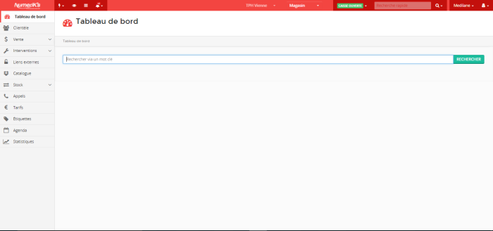

L' apprentissage de JARVIS et premiers contact clients chez PSM Numerik's
07 août 2017
Cette semaine commence sans la présence de Médilane, qui est parti en vacances, ne pourra donc pas s’occuper de réparations
d’ordinateurs portables et fixes. Comme j’ai appris à faire une installation complète de Windows et une préparation
de l’ordinateur (installations de logiciels aidant à la protection de l’ordinateur et mises à jour) la première
semaine, je m’occupe de cette partie pour les nouveaux ordinateurs achetés et les réinstallations demandées
par les clients. Pour les réparations plus importantes ou nécessitant un avis plus expert que le mien j’emmène
les ordinateurs à LDLC Vienne.
Lors de cette deuxième semaine, quand je ne m’occupe pas de l’installation ni de la préparation des ordinateurs,
je commence à apprendre le fonctionnement de l’application JARVIS, application principale servant à faire
les factures, rentrer des articles en stock, faire les feuilles de prise en charge pour les réparations etc.
En bref la quasi-totalité du magasin et des actions effectuées est géré par JARVIS.
Je m’y attelle donc et commence par faire la plupart des rentrées en stock de produits, je dois donc rentrer
les articles dans le logiciel pour pouvoir ensuite les placer dans le magasin. Par exemple, nous avons reçu
beaucoup de coques et de rabats pour téléphones portable lors de cette deuxième semaine, je les ai donc rentrés
en stock, j’ai affiché un prix et je les ai bien placés dans le magasin en fonction de la marque, du modèle
de téléphone, de la couleur et du prix.

L’application JARVIS sert également à faire les prises en charge pour les téléphones portables et les ordinateurs.
En l’absence de Médilane, Angélique me demande de commencer à créer ces fiches de prise en charge, elle consiste
à simplement avoir un rappel des informations du client, du problème sur l’appareil et du tarif de la réparation.
Tout cela étant géré par JARVIS, je n’ai juste qu’à demander les informations relatives aux clients (nom,
prénom, numéro de téléphone où ils sont joignables, adresse, mail …). Le tarif variant selon le type de réparation
et la pièce a remplacer, je ne suis pas encore habitué à ces prix et ne les connais pas par cœur, je dois
donc demander de l’aide à Angélique ou Lucas.
Le bilan de cette deuxième semaine est donc très positif, en effet j’ai pu découvrir une autre facette du
magasin, l’application JARVIS. Celle-ci possède de nombreuses facettes et est très complète, je ne maîtrise
donc pas complètement cet outil à la fin de la deuxième semaine.